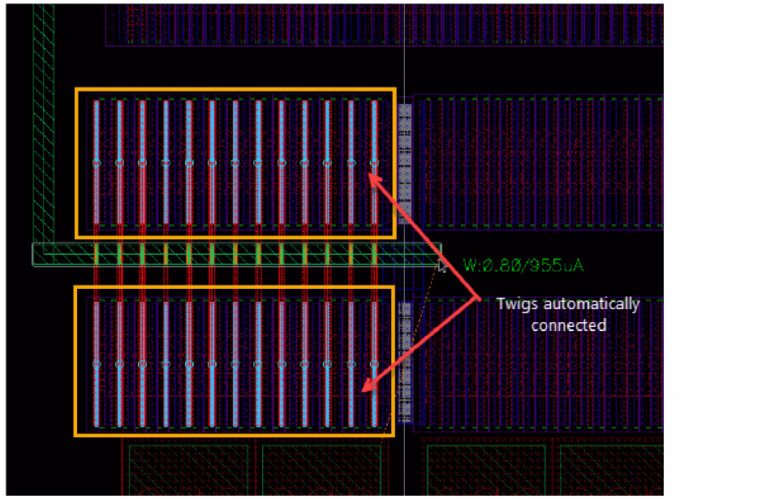
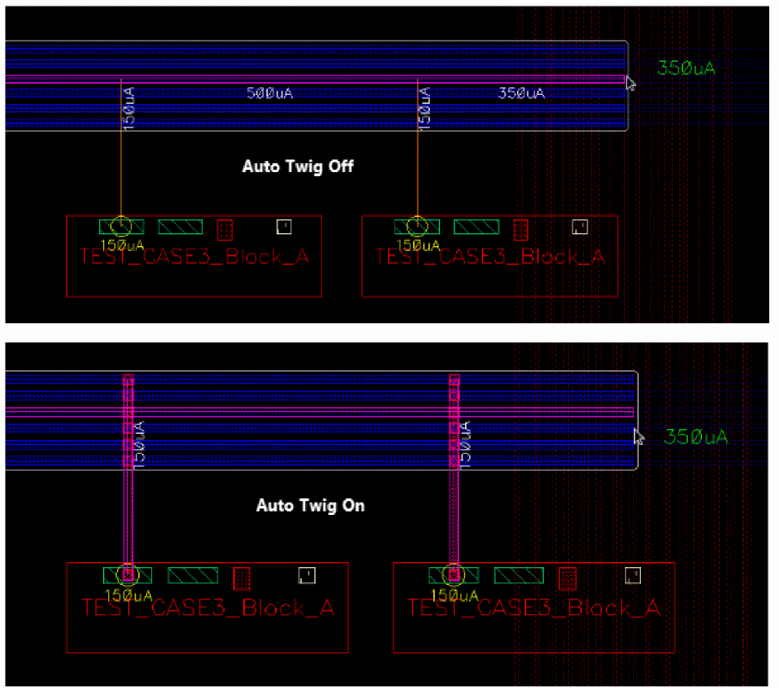
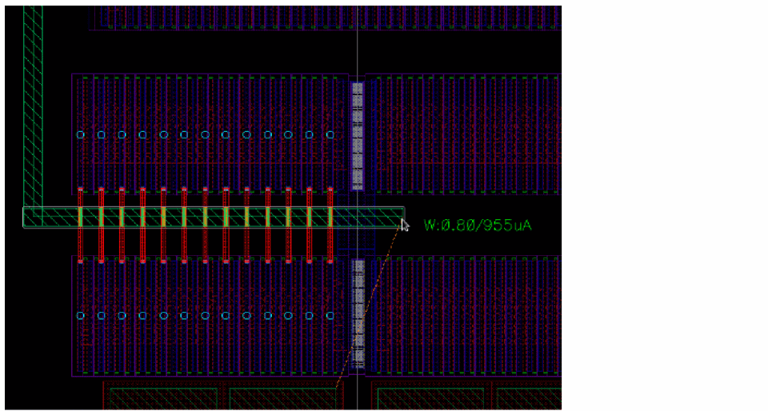
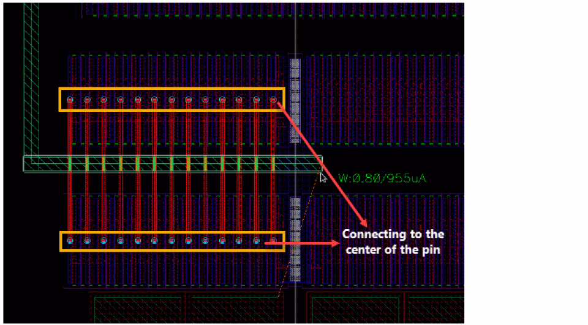
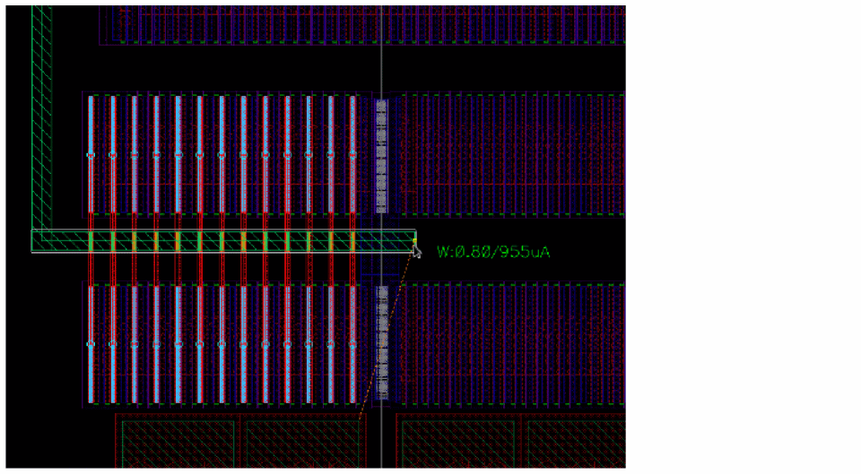
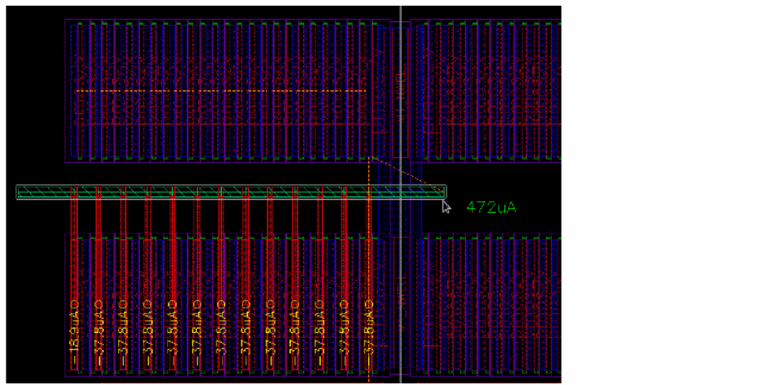
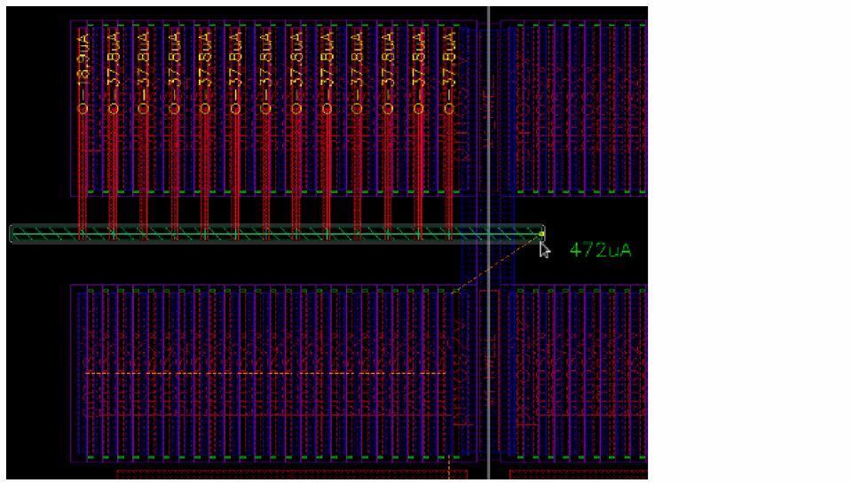
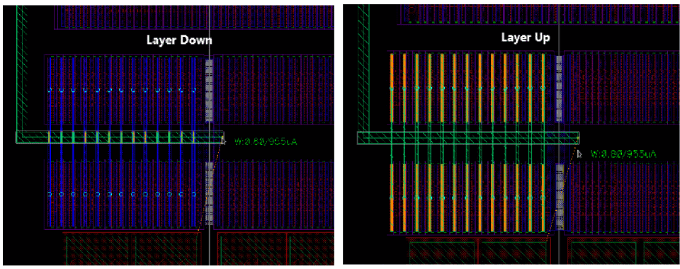
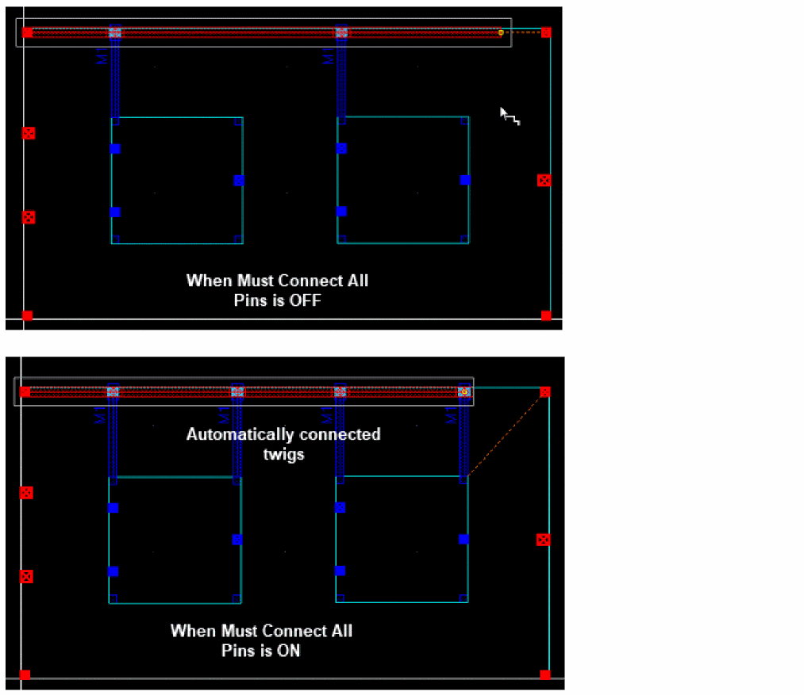

Connecting Twigs Automatically
In interactive SDR, you can identify the device pins (target pins identified by the flightlines) and automatically connect multiple pins with the appropriate wires and vias. The twig (wires from the device to the main wire) layer is automatically defined but can be changed. The automatic twigs connection is independent of the current estimation mode and the checker modes. Also, the number of cuts in the vias and the width of the twigs are automatically adjusted.
To automatically connect twigs:
- Select a net in the Navigator assistant or EAD Browser.
- Select a source pin of the selected net in the layout design.
- Choose Create – Wiring – Wire.
-
On SDR Toolbar, click the Automatically Connect Twigs button. The status of the button is modified to Automatically Connect Twigs: ON.
When the mouse pointer moves close to an object on the same net, the twig connections are automatically created.
By default, twigs are created on the layer above the layer on which the wire is created. However, you can change the twig layer anytime while creating the wire (See step 9).
The following figure shows how twigs are automatically created when the Create Stranded Wire command is enabled.
 -
Press
F3to open the Create Wire form.
By default, the Snap to Pin Center and the Cover Pin options are deselected in the Create Wire form. In this case, the twigs are automatically created and snapped to the edge of the pin.
 -
Select the Snap to Pin Center option in the Create Wire form. This automatically connects the twigs to the center of the pin of the created wire segment.
 -
Select the Cover Pin option. This adjusts the twigs to automatically cover the source and target pins of the wire segment.
 -
(Optional) Press the
{bindkey to automatically connect the twigs to the top-left or bottom-right targets of the wire. By default, the twigs are automatically connected to all targets. The following figure shows the automatic twig connection to the bottom targets.
Similarly, the following figure shows the automatic twig connection to the top targets.
 -
Modify the twig layer by pressing the
=key to move the twig layer up or the-key to move the twig layer down. When the twig layer is changed, the vias are automatically created on the wire being created.
 -
To finish the connecting the twigs automatically, press
Enteror click the last twig connection.
In addition, the Create Wire command identifies the Must Connect All Pins terminal instances and automatically makes twig connections for all the pins that must be connected.

Related Topics
Return to top